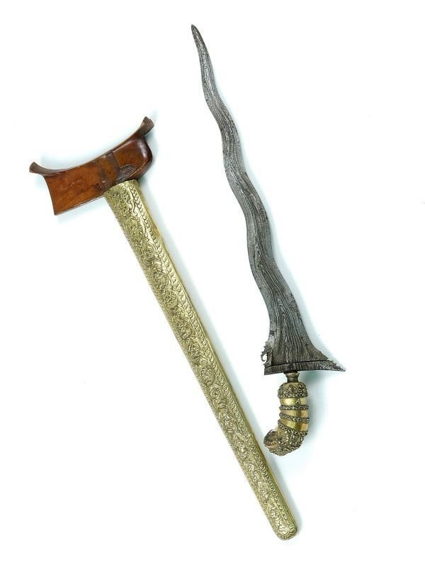
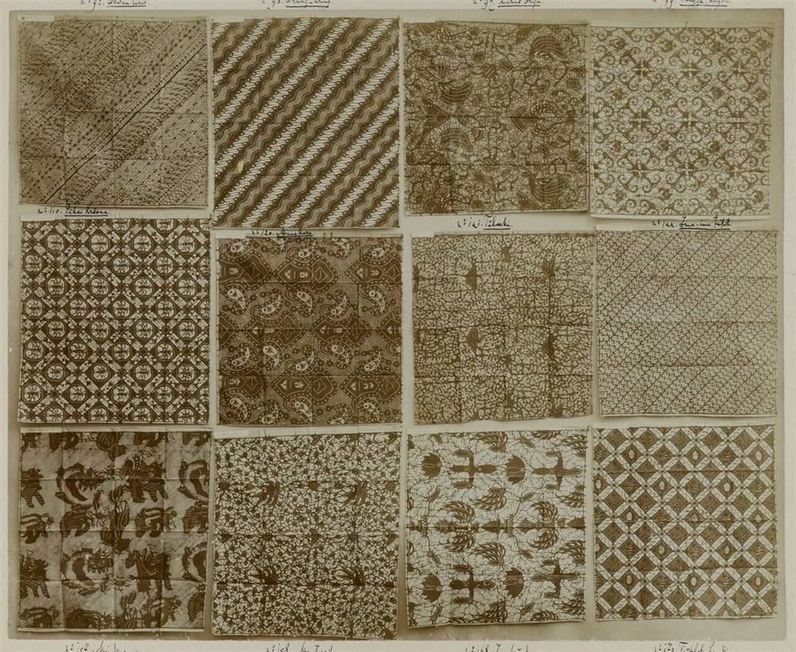
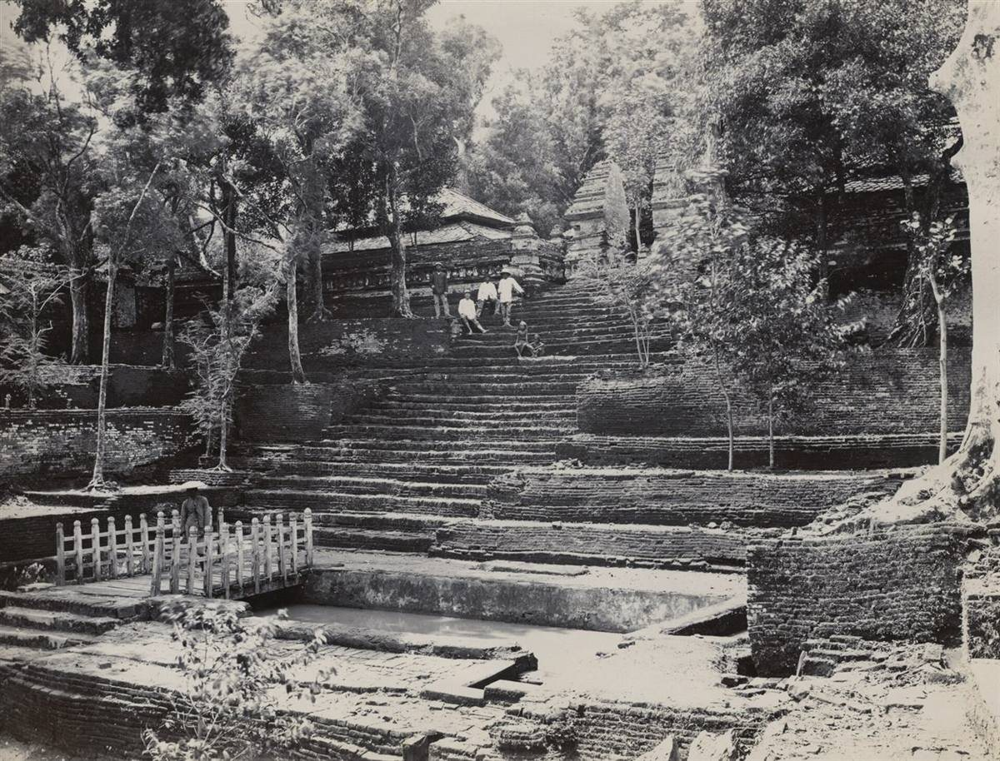
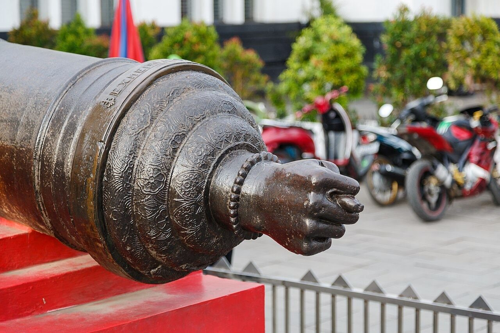
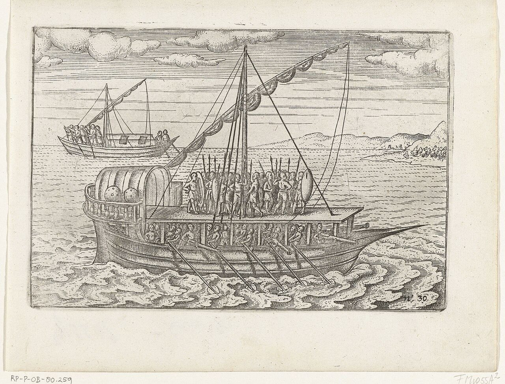
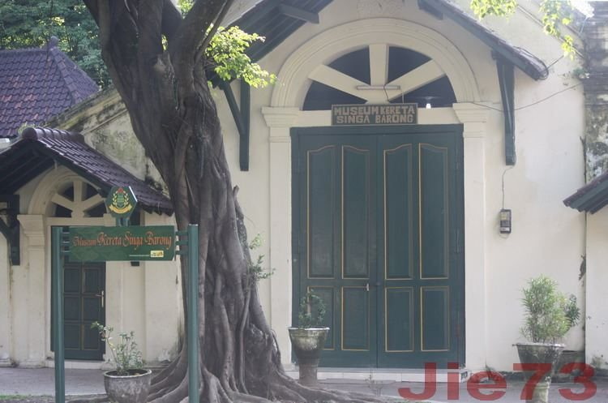

PUSAKA MILITERKeris Mataram Luk 13
Pamor wos wutah dengan warangka emas berukir. Menjadi tanda legitimasi keningratan dan piandel komandan divisi berkuda Mataram saat mengepung Batavia.

Meskipun benteng fisik Batavia tidak runtuh, ekspedisi Mataram memicu transformasi kultural: penyatuan kalender, mahakarya sastra spiritual, dan akulturasi masyarakat Jawa Barat.
Sultan Agung tidak hanya memimpin palagan militer akbar, melainkan menyusun kembali tatanan kosmologis, siklus agraris, serta sintesis nilai Islam dan tradisi leluhur Jawa.

ARSIP SOGAN MATARAMANPewarna alami dari kulit pohon soga jowo menghadirkan nuansa cokelat keemasan yang agung. Sultan Agung menetapkan ragam motif parang rusak dan semen kuncoro sebagai perlambang manusia yang pantang menyerah mengarungi samudra godaan batin, sekaligus menjadi identitas visual perlawanan kebudayaan Mataram.
Sintesis revolusioner antara Kalender Saka Hindu berbasis matahari dengan Kalender Hijriah berbasis bulan (lunar), menyatukan siklus panen dan ibadah spiritual rakyat.
Karya sastra sufistik gubahan Sri Sultan Agung yang memadukan ajaran tasawuf tinggi (manunggaling kawula gusti) dengan tata kelola keprajuritan dan etika negarawan.

Pusat pusara kerajaan di Bukit Pajimatan, dirancang berundak mengikuti kosmologi Gunung Meru sebagai poros spiritual kesinambungan para penguasa tanah Jawa.
Arsitektur kekuasaan Mataram memadukan empat elemen tak terpisahkan dalam satu poros: Kraton (Pusat Pemerintahan), Alun-Alun (Ruang Demokrasi Kawula), Masjid Agung (Kiblat Rohani), dan Pasar Gede (Kesejahteraan Ekonomi).

PUSAKA MILITERPamor wos wutah dengan warangka emas berukir. Menjadi tanda legitimasi keningratan dan piandel komandan divisi berkuda Mataram saat mengepung Batavia.

ARTILERI BENTENGArtileri berat dengan ornamen tangan 'mano in fico' di pangkalnya. Digunakan pertahanan VOC untuk mematahkan serbuan infanteri Mataram dari parit utara.

DOKUMEN MARITIMDokumentasi etsa kapal penjelajah pesisir Jawa. Tulang punggung jalur logistik Mataram yang memobilisasi puluhan ribu prajurit melintasi Laut Jawa.

SIMBOL ALIANSIMahakarya pahat kayu bersayap lambang akulturasi tiga peradaban dunia, saksi bisu aliansi strategis Mataram dan Cirebon saat ekspedisi Batavia.
Peletakan fondasi Dinasti Mataram Islam, melepaskan diri dari Pajang dan memperluas kendali atas wilayah pedalaman Jawa Tengah.
Puncak ekspansi wilayah, penaklukan Surabaya, pengepungan Batavia dua kali (1628-1629), dan unifikasi sistem kalender serta sastra.
Sentralisasi otokratis, friksi internal dengan ulama, dan pecahnya pemberontakan Trunajaya yang menghancurkan Keraton Plered.
Intervensi VOC semakin dalam ke dalam urusan suksesi keraton menyusul Geger Pacinan dan pemindahan ibu kota ke Surakarta.
Puncak 'Palihan Nagari': wilayah Mataram dipecah menjadi dua entitas resmi, Kasunanan Surakarta dan Kasultanan Ngayogyakarta Hadiningrat.
“Nadyan sirna gegamaning prang, luhuring budi lan piwulang ora bakal bisa sirna dening bedhil lan mimis. Mataram tetep ngadeg sajroning trapsila lan sastra.”